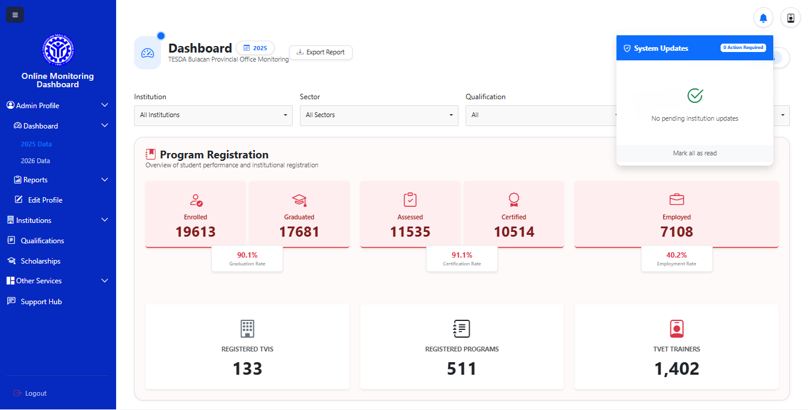
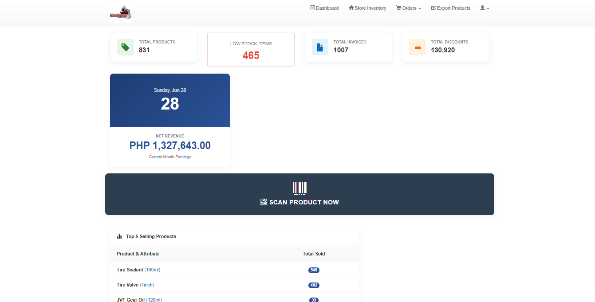
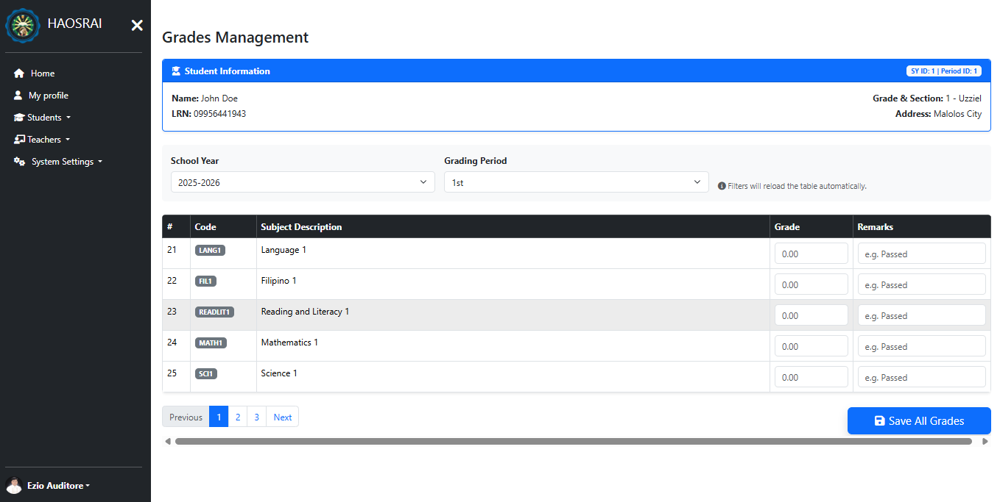

FEATURED WORK
A selection of systems I've designed and developed for government, education, and private-sector organizations.

Commissioned by regional leadership of TESDA, a Philippine government agency for technical and vocational education, I designed and developed a real-time monitoring platform for tracking Enrolled, Graduates, Assessed, Certified and Employed (EGACE) performance.
Commissioned by a leading motorcycle parts and accessories supplier in the Philippines, I designed and developed an inventory management system that automates stock tracking through integrated barcode generation and scanning. The solution improved inventory visibility, reduced manual encoding, and accelerated inventory operations, allowing staff to manage thousands of products more efficiently and accurately.


Commissioned by Holy Angels of St. Rita's Academy as part of my role as Management Information Systems (MIS) Head, I designed and developed an integrated School Management System that digitized key academic and administrative processes. The platform includes online enrollment, grading and assessment management, faculty management, teaching load assignment, and a student portal that allows learners to securely access grades and academic records online.
IT Software Solutions for Business Competitor
Gold Medalist — Provincial Level
Gold Medalist — Regional Level
Bronze Medalist — National Level
Graduated Cum Laude
Best Software Developer Award
Best Web Developer Award
Governor's Excellence Award Recipient
Department of Education Plaque of Recognition
Gawad Kabataan Nominee endorsed by TESDA Region III
Civil Service Eligibility (Honor Graduate Eligibility)
Web Development NC III
2D Animation NC II
torralbaalexisjoseph@gmail.com
0995 644 1943
Malolos City, Bulacan, Philippines